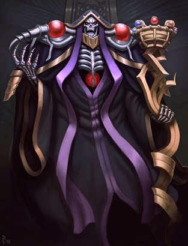

Ainz Ooal Gown
Momonga

Ainz Ooal Gown (アインズ・ウール・ゴウン), anteriormente conocido como Momonga (モモンガ), es el protagonista principal de la serie Overlord. Es el maestro del Gremio Ainz Ooal Gown, Señor Supremo de la Gran Tumba de Nazarick y el creador de Pandora's Actor. Es considerado como el más elevado de los Todopoderosos 41 Seres Supremos por los NPC de Nazarick..
En el Nuevo Mundo, es el Rey Hechicero del Reino Hechicero y el lanzador de magia más poderoso del mundo. Su otra identidad es conocida como "Momon", un guerrero oscuro y líder de Oscuridad, un grupo de aventureros clasificado como adamantita de esa nación. Es un aventurero de clase adamantita, así como el más fuerte conocido en E-Rantel.